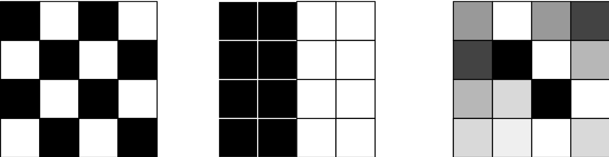

DataFrame
概述¶
Sedona 的 stats 模块为带有空间列的 dataframe 提供了用于地理空间 统计分析的 Scala 和 Python 函数。 stats 模块构建在 core 模块之上，提供了一组可用于 对这些 dataframe 进行空间分析的函数。stats 模块设计上配合 core 模块以及 viz 模块共同使用，从而提供一套完整的地理空间分析工具。
使用 DBSCAN¶
DBSCAN 函数在 scala/java 中位于 org.apache.sedona.stats.clustering.DBSCAN.dbscan，在 python 中位于 sedona.stats.clustering.dbscan.dbscan。
该函数使用 DBSCAN 算法为 dataframe 的每一条记录标注一个聚类标签。
dataframe 应至少包含一列 GeometryType 类型的列。各行必须唯一。如果仅有一列
几何列，会自动使用该列。如果有两列，会使用名为
'geometry' 的那一列。如果有多于一列且没有任何一列名为 'geometry'，则
必须显式提供列名。新增列将命名为 'cluster'。
参数¶
括号中的名字是 python 中的变量名
- dataframe —— 待聚类的 dataframe。必须包含至少一列 GeometryType 列
- epsilon —— DBSCAN 算法的最小距离参数
- minPts (min_pts) —— DBSCAN 算法的最小点数参数
- geometry —— 几何列的列名
- includeOutliers (include_outliers) —— 是否在输出中包含离群点。默认为 false
- useSpheroid (use_spheroid) —— 是否使用椭球距离计算（而非笛卡尔距离）。默认为 false
输出是输入 DataFrame，每一行新增了聚类标签。如果包含离群点，离群点的聚类值为 -1。
使用局部离群因子（LOF）¶
LOF 函数在 scala/java 中位于 org.apache.sedona.stats.outlierDetection.LocalOutlierFactor.localOutlierFactor，在 python 中位于 sedona.stats.outlier_detection.local_outlier_factor.local_outlier_factor。
该函数为 dataframe 的每一条记录新增一列，记录其局部离群因子。
dataframe 应至少包含一列 GeometryType 类型的列。各行必须唯一。如果仅有一列
几何列，会自动使用该列。如果有两列，会使用名为
'geometry' 的那一列。如果有多于一列且没有任何一列名为 'geometry'，则
必须显式提供列名。
参数¶
括号中的名字是 python 中的变量名
- dataframe —— 包含点几何对象的 dataframe
- k —— 计算 LOF 时考虑的最近邻居的数量
- geometry —— 几何列的列名
- handleTies (handle_ties) —— 是否在 k 距离计算中处理并列情形。默认为 false
- useSpheroid (use_spheroid) —— 是否使用椭球距离计算（而非笛卡尔距离）。默认为 false
输出是输入 DataFrame，每一行新增了 lof 值。
使用 Getis-Ord Gi(*)¶
G Local 函数在 scala/java 中位于 org.apache.sedona.stats.hotspotDetection.GetisOrd.gLocal，在 python 中位于 sedona.stats.hotspot_detection.getis_ord.g_local。
对 dataframe 的 x 列执行 Gi 或 Gi* 统计。
权重应为本行的邻居。权重元素应为包含 value 列与 neighbor 列的结构体。neighbor 列的内容应是
与父行同类型的邻居（但不再包含 neighbors）。生成此列的方法请参见 Using the Distance
Weighting Function 一节。要计算 Gi*
统计量，请确保焦点观测值位于邻居数组中（即本行本身出现在 weights 列中）且 star=true。显著性通过 z 分数计算。
参数¶
- dataframe —— 用于执行 G 统计的 dataframe
- x —— 要执行热点分析的列名
- weights —— 包含邻居数组的列名。neighbor 列的内容应是与父行同类型的邻居（但不再包含 neighbors）。你可以使用
Weighting类的函数来生成该列。 - star —— 焦点观测值是否包含在邻居数组中。若为 true 则计算 Gi*，否则计算 Gi
输出是输入 DataFrame，每一行新增以下列：G、E[G]、V[G]、Z、P。
使用距离加权函数¶
Weighting 相关函数在 scala/java 中位于 org.apache.sedona.stats.Weighting，在 python 中位于 sedona.stats.weighting。
该函数会新增一列，包含一组由 value 列和 neighbor 列构成的结构体数组。
通用的 addDistanceBandColumn（python 中为 add_distance_band_column）函数会为 dataframe 添加一个 weights 列，包含距离阈值内的其他记录及其权重。
dataframe 应至少包含一列 GeometryType 类型的列。各行必须唯一。如果仅有一列
几何列，会自动使用该列。如果有两列，会使用名为
'geometry' 的那一列。如果有多于一列且没有任何一列名为 'geometry'，则
必须显式提供列名。新增列将命名为 'cluster'。
参数¶
addDistanceBandColumn¶
括号中的名字是 python 中的变量名
- dataframe —— 包含几何列的 DataFrame
- threshold —— 判定邻居的距离阈值
- binary —— 邻居使用二进制权重还是反距离权重（dist^alpha）
- alpha —— 反距离权重使用的 alpha 值，当 binary 为 true 时忽略
- includeZeroDistanceNeighbors (include_zero_distance_neighbors) —— 是否包含距离为 0 的邻居。若包含且 binary 为 false，按浮点规范（除以 0），其值会是无穷大
- includeSelf (include_self) —— 是否将自身包含在邻居列表中
- selfWeight (self_weight) —— 自身权重的取值
- geometry —— 几何列的列名
- useSpheroid (use_spheroid) —— 是否使用椭球距离计算（而非笛卡尔距离）。默认为 false
addBinaryDistanceBandColumn¶
括号中的名字是 python 中的变量名
- dataframe —— 包含几何列的 DataFrame
- threshold —— 判定邻居的距离阈值
- includeZeroDistanceNeighbors (include_zero_distance_neighbors) —— 是否包含距离为 0 的邻居。若包含且 binary 为 false，按浮点规范（除以 0），其值会是无穷大
- includeSelf (include_self) —— 是否将自身包含在邻居列表中
- selfWeight (self_weight) —— 自身权重的取值
- geometry —— 几何列的列名
- useSpheroid (use_spheroid) —— 是否使用椭球距离计算（而非笛卡尔距离）。默认为 false
以上两种函数的输出均为输入 DataFrame，每一行新增 weights 列。
Moran I¶
Moran I 是一种空间自相关算法，它同时使用空间 位置和非空间属性。当取值接近 1 时 表示存在空间相关性；当取值接近 0 时 表示不存在相关性，数据随机分布；当 MoranI 自相关值接近 -1 时表示存在负 相关。负相关意味着邻近的取值彼此差异较大。
下图展示了不同空间相关性的取值
- 左侧为负相关（-1）
- 中间为正相关（1）
- 右侧相关性接近 0，数据是随机的。

Moran 统计可以作为 Scala/Java 与 Python 函数使用。 该输入函数需要一个 weight DataFrame。你可以用 Apache Sedona 的加权函数来构造该 weight DataFrame。需要注意的是， 你的输入必须包含一个唯一标识要素的 id 列以及一个 value 字段。MoranI Apache Sedona 函数 所需的最简 schema 如下：
|-- id: integer (nullable = true)
|-- value: double (nullable = true)
|-- weights: array (nullable = false)
| |-- element: struct (containsNull = false)
| | |-- neighbor: struct (nullable = false)
| | | |-- id: integer (nullable = true)
| | | |-- value: double (nullable = true)
| | |-- value: double (nullable = true)
你可以通过函数参数控制 value 列的列名和 id。
要使用 Apache Sedona 权重函数，需要把 id 列和 value 列传给保留参数。
val weights = Weighting.addDistanceBandColumn(
positiveCorrelationFrame,
1.0,
savedAttributes = Seq("id", "value")
)
val moranResult = Moran.getGlobal(weights, idColumn = "id")
// result fields
moranResult.getPNorm
moranResult.getI
moranResult.getZNorm
from sedona.spark.stats.autocorrelation.moran import Moran
from sedona.spark.stats.weighting import add_binary_distance_band_column
result = add_binary_distance_band_column(df, 1.0, saved_attributes=["id", "value"])
moran_i_result = Moran.get_global(result)
## result fields
moran_i_result.p_norm
moran_i_result.i
moran_i_result.z_norm
结果中会得到 Z norm、P norm 以及 Moran I 值。
下面是函数的完整签名
def getGlobal(
dataframe: DataFrame,
twoTailed: Boolean = true,
idColumn: String = ID_COLUMN,
valueColumnName: String = VALUE_COLUMN): MoranResult
// java interface
public interface MoranResult {
public double getI();
public double getPNorm();
public double getZNorm();
}
def get_global(
df: DataFrame,
two_tailed: bool = True,
id_column: str = "id",
value_column: str = "value",
) -> MoranResult: ...
@dataclass
class MoranResult:
i: float
p_norm: float
z_norm: float